La reproducción es el proceso por el cual los organismos generan nuevos individuos de su misma especie. Normalmente, al desarrollarse, estos nuevos individuos alcanzan también la capacidad de reproducirse.
-
01
La importancia de la reproducción
Open or CloseLa reproducción es fundamental para todas las formas de vida en el planeta: las plantas, los hongos, los protistas, las bacterias, las arqueas y los animales (entre ellos el ser humano) la llevan a cabo.
Gracias a la reproducción, los seres vivos pueden autoperpetuarse, es decir, generar organismos semejantes a ellos. Esto es necesario para la supervivencia de las especies ya que, sin la reproducción, las poblaciones de organismos desaparecerían con la muerte de sus integrantes.
01.1Estrategias reproductivas
En la naturaleza es posible encontrar especies que, al reproducirse, producen muchos descendientes y otras que solamente originan uno o pocos individuos. Esto corresponde a dos estrategias reproductivas distintas, que responden de manera diferente a las condiciones del ambiente y la disponibilidad de recursos. Estas estrategias son:
- Estrategia r: es propia de poblaciones que generan rápidamente un gran número de descendientes, los cuales reemplazan pronto a los individuos que mueren. Gracias al elevado número de organismos en estas poblaciones, estas son menos vulnerables a los cambios en el medioambiente, pues la muerte de algunos individuos no afecta mucho a la población general. Los insectos y los roedores exhiben esta estrategia.
- Estrategia K: es típica de las especies con una tasa de reproducción baja, es decir, generan pocos descendientes en cada cría. Los organismos que adoptan esta estrategia son más eficientes en el manejo de sus recursos y habitan ambientes estables. Algunos representantes de esta estrategia son las aves y los grandes mamíferos.
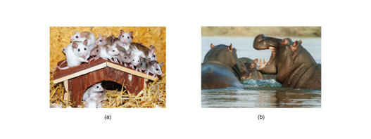a. Los ratones son un ejemplo de estrategia r.
b. Los hipopótamos adoptan la estrategia K.
A continuación, se señalan algunas características de las estrategias reproductivas r y K.
Estrategia r Tiempo de vida Corto Tamaño corporal Pequeño Madurez sexual Rápida Número de crías Elevado Cuidado parental Breve Crecimiento Rápido Número de camadas al año Numerosas Tamaño de la población Variable Estrategia K Tiempo de vida Largo Tamaño corporal Grande Madurez sexual Tardía Número de crías Reducido Cuidado parental Prolongado Crecimiento Lento Número de camadas al año Pocas Aprende
Practica
01.2Consolidación
Realiza la siguiente actividad para consolidar lo que has aprendido en esta sección.
-
02
Los tipos de reproducción en los seres vivos
Open or CloseTodos los organismos provienen de otros seres vivos; sin embargo, no todos se multiplican de la misma manera. En la naturaleza hay dos tipos básicos de reproducción: asexual y sexual.
02.1La reproducción asexual
La reproducción asexual, denominada también vegetativa, se caracteriza porque a través de ella un solo individuo genera organismos nuevos. Estos organismos son idénticos entre sí y a su progenitor; en otras palabras, con la reproducción asexual se crean clones del organismo original. En este tipo de reproducción no intervienen órganos reproductores especializados.
Hay diferentes modos de reproducción asexual: la fisión binaria, la gemación, la esporulación, la fragmentación y la partenogénesis, aunque en todos los casos está involucrado un proceso de división celular que da origen a células idénticas a la célula original. En el caso de los organismos eucariotas, este proceso es la mitosis.
¡Recuerda!
La mitosis es el mecanismo de división celular de las células eucariotas, mediante el cual se crean dos células hijas idénticas a la célula que les dio origen.
02.1.1La fisión binaria
La fisión binaria, también conocida como bipartición, es común en los organismos unicelulares. Inicia con el alargamiento de la célula y la duplicación de su contenido; después, el organismo se divide en dos, repartiendo equitativamente los componentes celulares entre las células hijas. De esta forma se obtienen dos células con las mismas características de la célula que les dio origen.
Debido a la rapidez con la que este proceso se lleva a cabo, en poco tiempo se genera un gran número de individuos.
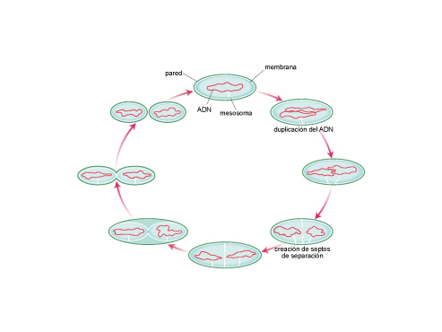La fisión binaria es un proceso de reproducción asexual en el que una célula se divide en dos células hijas idénticas.
02.1.2La gemación
La gemación es un proceso asexual que pueden llevar a cabo tanto organismos unicelulares como pluricelulares.
Durante la gemación se forma un abultamiento en alguna parte del organismo que se va a reproducir. Este abultamiento, conocido como gema o yema, se desarrolla y convierte en un nuevo individuo. Este puede independizarse o permanecer adherido al parental (es decir, al organismo que le dio origen).
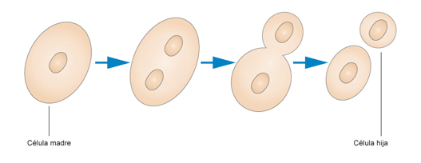Durante la división por gemación se generan dos células hijas de distinto tamaño debido a la distribución desigual del citoplasma. Sin embargo, la información genética es idéntica entre parental y descendiente.
02.1.3La esporulación
La esporulación es una forma de reproducción basada en la formación y liberación de esporas. Una espora es una estructura microscópica que contiene reservas de nutrientes y una copia exacta de la información del organismo que la produce.
En algunos seres vivos, la esporulación hace parte del ciclo reproductivo normal. En otros, la formación de esporas ocurre como consecuencia de la exposición del organismo a condiciones ambientales desfavorables, como la ausencia de nutrientes o de agua. En cualquier caso, las esporas son liberadas al medio y cuando estas encuentran las condiciones necesarias para su desarrollo, experimentan una serie de cambios y se convierten en nuevos organismos.
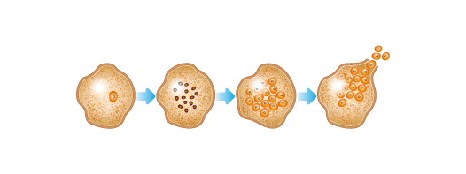En la esporulación se produce una duplicación del material genético, tantas veces como esporas se generen. Una vez están listas, las esporas son liberadas al medio.
02.1.4La fisión seguida de regeneración
La fisión se presenta en ciertos organismos multicelulares y tiene lugar cuando un individuo se divide en dos o más partes, de manera accidental o no. De cada fragmento se desarrolla un nuevo individuo y el organismo original regenera la parte perdida.
Si el organismo se divide en dos, el proceso se denomina escisión, mientras que si se divide en más partes se habla de fragmentación.
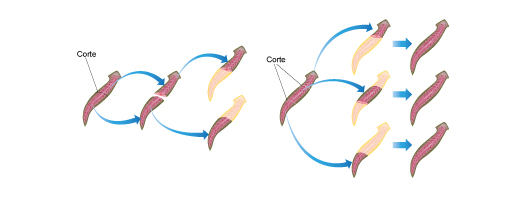a. Escisión: cada uno de los dos fragmentos generados origina un nuevo organismo.
b. Fragmentación: los fragmentos producidos en el corte generan nuevos individuos idénticos al progenitor.
02.1.5La partenogénesis
La partenogénesis es propia de algunos animales. Consiste en la formación de nuevos individuos solamente a partir de las células sexuales producidas por la hembra; en este proceso no se requiere de la intervención de un macho. En la partenogénesis, la célula sexual femenina es activada por factores ambientales que hacen que se desarrolle hasta formar un nuevo organismo.
Como en algunas de las especies que presentan partenogénesis sí existen los machos, hay individuos que se originan por reproducción sexual y otros que nacen por partenogénesis. En las abejas, por ejemplo, los machos se generan por partenogénesis mientras que las hembras lo hacen por reproducción sexual. Hay también especies en donde solo existen las hembras, como algunas lagartijas o ciertos peces.
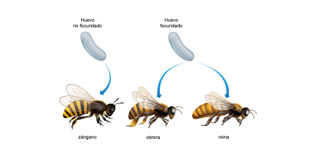Las abejas pueden llevar a cabo partenogénesis. En este grupo, los huevos de la reina generan zánganos (abejas macho).
02.1.6Ventajas y desventajas de la reproducción asexual
La asexual es la forma más común de reproducción en la naturaleza. Este tipo de reproducción tiene ventajas y desventajas con respecto a la reproducción sexual, las cuales se observan en la siguiente tabla:
Ventajas Desventaja 1. Es rápida y relativamente simple. 1. En la inmensa mayoría de los casos genera copias idénticas (clones), por tanto, no hay variación en la población. 2. La inversión de energía es mínima dado que no requiere producir ni mantener células sexuales. 3. Un solo individuo genera múltiples organismos. 4. Favorece la rápida colonización de ambientes. En términos generales, la reproducción asexual es más eficiente que la sexual, aunque tiene como desventaja el que se generen individuos idénticos. Esto es inconveniente porque todos los organismos serán igualmente resistentes o vulnerables a los cambios de las condiciones medioambientales.
Cuando hay variedad en una población, es posible que algunos de los organismos tengan más resistencia que otros y, por tanto, tengan mejores posibilidades de sobrevivir y reproducirse. Si cada vez hay más hijos de los individuos resistentes que de los débiles, con el tiempo la población se hará más resistente.
02.2La reproducción sexual
En la reproducción sexual, la formación de nuevos organismos requiere de la intervención de dos individuos, un macho y una hembra. Esta es la forma más común de reproducción en los organismos multicelulares, aunque también puede darse en unicelulares.
En este proceso participan dos células especializadas denominadas gametos, que se forman a través de la meiosis. Los gametos de padre y madre se unen para dar origen a un cigoto, que se desarrolla hasta convertirse en un nuevo individuo.
¡Recuerda!
La meiosis es un mecanismo de división celular por el cual se crean células hijas con la mitad del número de cromosomas de la célula madre. Este proceso es usado por los organismos eucariotas con reproducción sexual para formar gametos.
De acuerdo con las características de los gametos que participan en el proceso, es posible reconocer dos tipos de reproducción sexual: isogamia y anisogamia.
- Isogamia: los gametos involucrados son idénticos en forma y tamaño. Es usual encontrar este tipo de células reproductivas en protozoos, algas y algunos hongos.
- Anisogamia o heterogamia: los gametos que se unen son distintos en forma y tamaño; esto es común en plantas y animales. Un tipo particular de anisogamia es la oogamia, en donde hay un gameto masculino móvil y pequeño conocido como espermatozoide y otro femenino grande e inmóvil denominado óvulo. La oogamia ocurre predominantemente en animales (incluido el ser humano), aunque también se da en algunos protistas y algunas plantas.
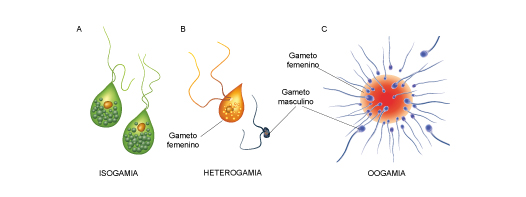a. Los dos gametos son similares en forma y tamaño.
b. Los gametos varían en cuanto a forma y tamaño.
c. El gameto femenino es grande e inmóvil mientras que el masculino es pequeño y móvil.
02.2.1La fecundación
La fecundación es una fase de la reproducción sexual que consiste en la unión de los gametos, a veces llamada también fusión o singamia. De esta unión se genera el cigoto, que al desarrollarse forma un organismo.
Durante el proceso de fecundación tienen lugar las siguientes etapas:
- a. Reconocimiento inicial entre los gametos: estos deben provenir de individuos de la misma especie para que la fecundación sea exitosa.
- b. Control de la fusión: garantiza que solo un gameto masculino se una con uno femenino. Muchos gametos masculinos tratarán de fecundar el gameto femenino, pero solamente lo logrará el que primero llegue a él.
- c. Unión y mezcla de la información de los dos gametos. Esto quiere decir que cuando se unen los gametos, los núcleos celulares se fusionan (recuerda que en el núcleo celular está contenido el ADN).
- d. Formación del cigoto e inicio de su desarrollo.
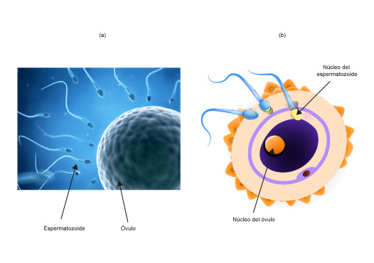El proceso de fecundación implica:
a. Encuentro y reconocimiento de las células sexuales.
b. Unión entre los gametos masculino y femenino, y fusión entre los núcleos de los gametos.
Hay diferentes tipos de fecundación según el lugar en el que se lleve a cabo y la procedencia de los gametos.
Clasificación según el lugar en el que ocurre:
Tipo de fecundación Descripción Interna El gameto masculino fecunda al femenino dentro del cuerpo de la hembra. Es habitual en mamíferos, aves, reptiles e insectos, así como en plantas. Externa La unión de los gametos se realiza fuera del cuerpo de la madre. La hembra libera sus óvulos y, sobre estos, el macho esparce los espermatozoides. Se da en peces y anfibios, por ejemplo. Clasificación según la procedencia de los gametos:
Tipo de fecundación Descripción Cruzada Los gametos que participan en la fusión proceden de individuos distintos Autofecundación Los gametos que participan en la fusión proceden del mismo individuo 02.2.2El dimorfismo sexual
El dimorfismo sexual tiene que ver con las diferencias físicas entre los sexos de una misma especie. En este caso, los machos son diferentes a las hembras en mayor o menor grado. Así, es posible encontrar variaciones en cuanto al color, la forma o el tamaño.
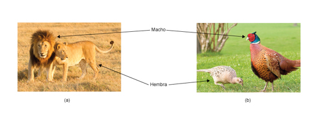a. El dimorfismo sexual es evidente en los leones.
b. Los faisanes también presentan dimorfismo sexual.
02.2.3El hermafroditismo
El hermafroditismo es un término biológico utilizado para referirse a los individuos que poseen órganos reproductivos mixtos, es decir, que son capaces de producir gametos femeninos y masculinos. A pesar de que ambos gametos se encuentran en un mismo ser, es poco frecuente la autofecundación y más usual la fecundación cruzada.
Se han reportado casos excepcionales de algunos peces con hermafroditismo secuencial, lo cual significa que en sus primeras etapas de vida desarrollan uno de los sexos y luego de reproducirse varias veces, su estado sexual inicial se modificado.
Se han conocido casos similares al hermafroditismo en seres humanos, en los cuales, a pesar de que un individuo presenta características de ambos sexos, solamente desarrolla de manera correcta uno de los gametos. A dichas personas se les denomina intersexuales.
02.2.4La reproducción sexual y la variabilidad
La variabilidad se refiere a las diferencias existentes entre organismos de una misma especie. En una población determinada, los organismos son similares entre sí por ser de la misma especie, pero las diferencias entre los individuos resultan útiles para que la población se adapte a los cambios que se dan en el medio.
La variabilidad de la población se debe a la reproducción sexual: durante este proceso se unen células especializadas de dos individuos distintos, por tanto, el cigoto formado durante la fecundación contiene una combinación de la información proveniente de dos células diferentes. De esta manera, se genera un nuevo individuo con características heredadas de los dos padres, y distinto a cada uno de ellos.
02.2.5Ventajas y desventajas de la reproducción sexual
A continuación se enumeran las ventajas y desventajas de la reproducción sexual.
Ventajas Desventajas 1. Favorece la variabilidad de la especie, por tanto, aumenta la posibilidad de supervivencia frente a cambios en las condiciones ambientales. 1. Es un proceso lento. 2. Requiere un alto gasto de energía en la generación de gametos especializados y en la búsqueda de pareja. 3. Debido a que se generan pocos individuos en cada reproducción, la posibilidad de colonizar nuevos territorios es menor. 02.3Consolidación
Actividades para consolidar lo que has aprendido en esta sección.
-
03
La reproducción en microorganismos
Open or CloseLos microorganismos son seres diminutos que se pueden observar con el uso del microscopio. Estos organismos son unicelulares en su gran mayoría, es decir, tienen una sola célula capaz de llevar a cabo todas las funciones vitales.
Son seres microscópicos las bacterias, las arqueas y los protistas. Estos organismos están presentes prácticamente en todos los ambientes y se reproducen muy rápido. También se incluyen algunos hongos, plantas y animales microscópicos; sin embargo, al hablar de la reproducción en microorganismos nos limitaremos a los tres primeros grupos.
Vale la pena aclarar que en microbiología, el término crecimiento se define como el aumento en el número de células; esto implica que crecimiento es sinónimo de reproducción en este contexto. Por lo mismo, en adelante, hablaremos de crecimiento o reproducción microbiana como sinónimos.
03.1La reproducción en bacterias y archaeas
En las condiciones adecuadas, los microorganismos se reproducen de manera veloz. Por ejemplo, la bacteria Escherichia coli, a menudo llamada simplemente E. coli, es habitual en el sistema digestivo humano y allí su presencia es indispensable para el correcto funcionamiento del intestino. Sin embargo, algunos tipos de E. coli son dañinos y pueden multiplicarse en pocas horas al interior del intestino de una persona que ha consumido alimentos contaminados. También, cuando la población de bacterias es muy grande puede causar enfermedades graves dentro y fuera del sistema digestivo.
Una característica común entre las bacterias y las arqueas es que las células de ambos grupos son de tipo procariota (sin núcleo), por lo que tienen métodos de reproducción similares.
En la mayoría de los procariotas, la reproducción, y por tanto el crecimiento de la población, se lleva a cabo mediante fisión binaria. No obstante, existen algunas excepciones:
- Ciertas bacterias y algunas arqueas se reproducen mediante procesos de gemación.
- Algunas arqueas se reproducen a través de fragmentación.
- En algunas bacterias también se han reconocido procesos de reproducción parasexual, en los que ocurre un intercambio de material genético entre una célula donadora y una receptora, bien sea por conjugación, transformación o transducción.
Reproducción parasexual en bacterias Conjugación Una bacteria donadora transmite a otra bacteria un fragmento circular que contiene información genética (ADN). Este fragmento se conoce como plásmido y es entregado a través de un puente o pili, que se forma entre las membranas de las bacterias donadora y receptora. Transformación En ocasiones, las bacterias dejan libres fragmentos de ADN en su ambiente cercano. Estos son captados por otras bacterias, que adquieren entonces la información allí contenida. Transducción El intercambio de información se realiza gracias a que un bacteriófago (un virus que infecta a las bacterias) transporta ADN de una célula a otra. La reproducción parasexual permite a las bacterias adquirir características de otros organismos y a veces de otras especies.
La transferencia horizontal y la resistencia de las bacterias a los antibióticos
La reproducción parasexual de las bacterias, también conocida como transferencia horizontal de genes, puede favorecer la resistencia de estos microorganismos a los agentes bactericidas.
Ciertos plásmidos contienen genes de resistencia que le otorgan al portador la capacidad de contrarrestar el efecto del antibiótico y así sobrevivir en presencia de este. Al ser transferido dicho plásmido de un organismo a otro y posteriormente transmitido a las células hijas, se fija en la población la capacidad de resistencia. Esto conlleva a que un antibiótico pierda efectividad. Es por esta razón que, de manera permanente, se deben crear nuevos antibióticos para combatir las bacterias que nos causan enfermedades.
03.2La reproducción en protistas
Recordemos que los protistas son organismos unicelulares en su mayoría y solo algunos son organismos multicelulares simples. Entre los protistas más reconocidos se encuentran las amebas, algunas de las cuales viven en el agua o en la tierra, mientras que otras parasitan el intestino humano.
Algunos protistas se reproducen por bipartición, esporulación o gemación. Otros se reproducen sexualmente a través de isogametos, que al unirse dan lugar a un cigoto.
En ciertos protistas multicelulares, como algunas algas, es posible observar un método reproductivo conocido como alternancia de generaciones, en el que se presentan las dos formas de reproducción: una generación lleva a cabo la fase asexual o esporofítica, mientras que la siguiente generación realiza reproducción sexual o gametofítica.
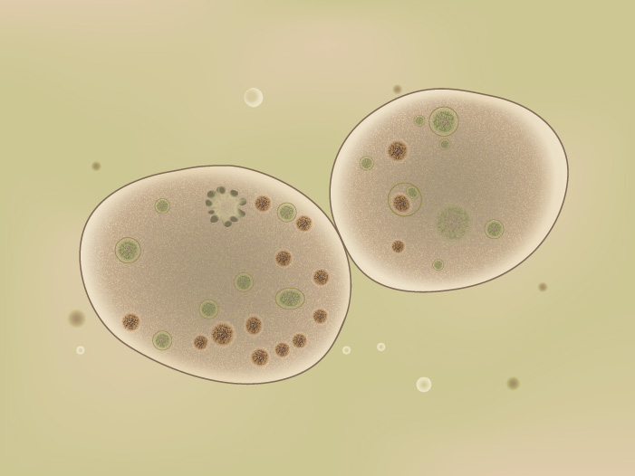En los protistas, así como en el resto de organismos unicelulares, la reproducción del individuo equivale a la división de la célula. La partición de la célula en dos, previa duplicación de su contenido, genera dos organismos hijos idénticos.
03.3Consolidación
Actividad para consolidar lo que has aprendido en esta sección.
-
04
La reproducción en hongos
Open or CloseMuchos hongos microscópicos se reproducen de manera asexual, por medio de la gemación. Esta es la forma de reproducción de las levaduras, un grupo de hongos microscópicos. Estos seres se multiplican muy rápido, con ciertas levaduras se elabora la masa de pan y con otras se hace cerveza.
La mayoría de los hongos, sin embargo, se reproducen por medio de esporas, pequeñísimas estructuras que les permiten dispersarse a través del agua o del aire, y también sobrevivir a condiciones adversas.
Por lo general las esporas se producen en estructuras llamadas esporangios y pueden tener un origen sexual o asexual. Casi todos los hongos pueden reproducirse sexual y asexualmente, aunque algunos solo son asexuales.
El cuerpo de los hongos multicelulares es haploide (es decir, contiene una sola copia de cada cromosoma) y está formado por filamentos llamados hifas. Estas hifas son largas y delgadas, como hilos. Por mitosis, estas hifas producen esporas (también haploides) que son fácilmente transportadas por el viento, el agua o los animales, y al llegar a un ambiente favorable se desarrollan rápidamente hasta formar clones del hongo original.

El cuerpo de los hongos está hecho de filamentos llamados hifas. Algunos hongos como los champiñones generan estructuras que sobresalen llamadas setas, y mantienen la mayoría de las hifas bajo la superficie del suelo.
En condiciones estables la forma de reproducción preferida por los hongos es la asexual, pero cuando se presentan cambios en el ambiente emplean la reproducción sexual.
En la reproducción sexual dos hifas (de diferentes hongos) deben encontrarse y fusionarse, de manera que compartan el contenido de sus células. Una vez se han fusionado los núcleos de estas células, queda un núcleo con dos copias de cada cromosoma, es decir, un núcleo diploide. Por meiosis, este núcleo dará origen a esporas haploides (de origen sexual). Al dispersarse, cada espora podrá crecer hasta formar un nuevo hongo que, a diferencia de lo que ocurre en la reproducción asexual, será diferente a los dos hongos que fusionaron sus hifas.
Cabe resaltar que entre los hongos no hay machos y hembras; más bien, se habla de "cepas" de hongos, que son variedades de la misma especie. Estas cepas actúan como los machos y las hembras ( + y - ) durante la reproducción, pero normalmente existen más de dos tipos de cepas entre la población. Para que dos hongos se reproduzcan sexualmente, deben ser de la misma especie pero de cepas diferentes.
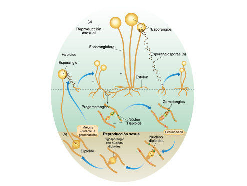En la reproducción asexual de los hongos (a), el esporangio, que es haploide, produce esporas que dan origen a nuevos individuos. Durante la reproducción sexual (b), las hifas de un par de hongos de diferentes cepas se encuentran y se fusionan, produciendo un cigoto diploide. Este cigoto hará meiosis para producir de nuevo esporas haploides.
04.1Consolidación
Actividad para consolidar lo que has aprendido en esta sección.
-
05
La reproducción en plantas
Open or CloseLa reproducción de las plantas es algo más compleja que en otros grupos porque cada especie usa alternadamente la reproducción sexual y la asexual. Sin embargo, se mantienen los principios básicos de la reproducción vistos hasta ahora.
Aprende
05.1La alternancia de generaciones
Todas las plantas tienen alternancia de generaciones. Esto significa que todo organismo vegetal vive una etapa de reproducción asexual y otra de reproducción sexual.
Estas etapas también se conocen como fase gametofítica y fase esporofítica. A su vez, mientras la planta esté en la fase gametofítica se le llama gametofito y es haploide (es decir, que tiene solo una copia de cada cromosoma). Si la planta está en la fase esporofítica, se le llama esporofito y es diploide (es decir, tiene dos copias de cada cromosoma).
En la fase gametofítica, la planta crea gametos masculinos y femeninos que se unen y originan un cigoto. Cuando el cigoto se desarrolla forma una nueva planta que será diploide, el esporofito.
En la fase esporofítica, que es en la que se encuentra el esporofito, la planta forma y libera esporas. Cuando estas germinan (es decir, crecen y se desarrollan) forman nuevos individuos. La planta que nace de una espora será un gametofito y estará en capacidad de formar gametos.
Es normal que un gametofito produzca tanto gametos masculinos como femeninos, pero suele hacerlo en épocas diferentes para evitar la autofecundación.
Aprende
05.2La reproducción en plantas con y sin semilla
En el caso de las plantas que viven en ambientes húmedos, como el musgo y los helechos, el gametofito y el esporofito son claramente diferenciables, pues son plantas independientes
- En los musgos, la mayor parte de la planta que se observa corresponde al gametofito, mientras que el esporofito es apenas la estructura alargada que sobresale.
- En los helechos, en cambio, el más desarrollado es el esporofito, es decir es una planta en la que es posible diferenciar raíz, tallo y hojas. En este caso, el gametofito es una estructura pequeña (de unos pocos centímetros) de forma acorazonada.
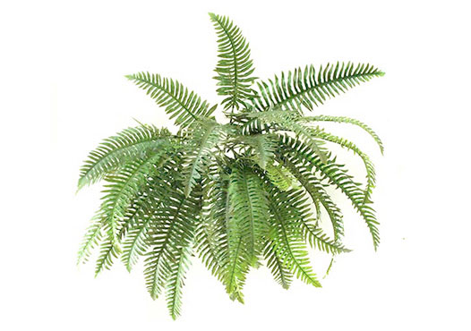El esporofito del helecho tiene hojas grandes, en cuyo envés se pueden observar especies de manchas ligeramente abultadas conocidas como soros, en donde se producen las esporas.
En estas plantas, el gametofito libera espermatozoides que llegan al óvulo nadando; es por eso que estos organismos solo pueden vivir en ambientes muy húmedos. Los helechos y los musgos se consideran plantas sin semilla.
En las plantas terrestres más evolucionadas, el gametofito se reduce notablemente y no es independiente del esporofito. De hecho, el gametofito se ve reducido a un pequeño grupo de células que se encuentra en los órganos reproductores, mientras que el resto de la planta es el esporofito.
Estas plantas habitan en ambientes más secos y por eso necesitan estructuras especiales para proteger de la desecación a las células relacionadas con la reproducción.
Así, el cigoto que va a formar el embrión y luego crecerá hasta convertirse en una planta adulta, se protege de la sequía en la estructura llamada semilla. El gametofito masculino, productor de los espermatozoides, se encierra en un saco protector llamado grano de polen y el gametofito femenino permanece húmedo y protegido sobre el esporofito.
05.3La reproducción sexual en las plantas con flor
Algunas de las plantas que crecen a partir de una semilla producen flores, mientras que otras no lo hacen.
Actualmente, la mayoría de las plantas terrestres producen flores, y estas son muy importantes para su reproducción pues es allí en donde se encuentran los órganos reproductivos. Específicamente, en las flores se encuentran los gametofitos masculino y femenino.
Las estructuras que componen la flor son:
- :El pistilo es el órgano femenino de la flor. Está formado por el estigma, el estilo y el ovario. El ovario se encuentra en la base del pistilo; el estilo, en la parte intermedia; y el estigma, en la superior. El ovario alberga los óvulos o gametofitos femeninos, donde se producen los gametos femeninos, llamados oosferas.
- Los estambres: constituyen el órgano masculino de la flor. Están formados por el filamento, la porción más alargada, y la antera, un saco situado en la parte superior del filamento donde se generan los granos de polen. Los granos de polen son los gametofitos masculinos. En ellos se producen las células sexuales masculinas.
- La corola: rodea el pistilo y los estambres. Está formada por pétalos que, debido a su vistosidad, atraen a los insectos. Estos, al visitar distintas flores, ayudan a transportar polen hasta el ovario.
- El cáliz: se encuentra en la base de la flor y está formado por sépalos verdes. Su función es proteger las delicadas estructuras de la flor.
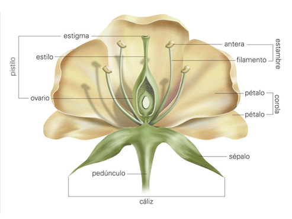En la flor se encuentran los órganos reproductores de las plantas con semillas. El pistilo es el órgano reproductor femenino mientras que los estambres son los masculinos.
Practica
La reproducción sexual en las plantas con semilla incluye varias etapas: la polinización, la fecundación, la fructificación, la dispersión y la germinación.
05.3.1La polinización
La polinización es el proceso mediante el cual los granos de polen llegan desde la antera del estambre hasta el pistilo. Si esto ocurre dentro de la misma planta, el mecanismo se denomina autopolinización; mientras que si los granos de polen viajan de una flor a otra, transportados por el viento o por insectos, se considera una polinización cruzada.
- La polinización por insectos: los insectos se posan sobre las flores para consumir su néctar. Al hacerlo, el polen se adhiere a sus patas, y así resulta transportado de una flor a otra.
- La polinización por el viento: es usual en flores cuyas anteras sobresalen de los pétalos. En estas, el polen suele ser muy ligero y por eso se dispersa con facilidad hasta alcanzar otras flores de plantas distantes. .
05.3.2La fecundación
La fecundación implica la fusión de dos pares de núcleos; por una parte, el núcleo del gameto masculino se fusiona con el del gameto femenino. Esto ocurre cuando el grano de polen llega al estigma de una flor de su misma especie y, entonces, se desarrolla un conducto llamado tubo polínico que une el estigma con el ovario. Este tubo permite que el gameto sexual masculino contenido en el grano de polen llegue hasta la oosfera o célula sexual femenina situada en el ovario.
En el ovario, el gameto masculino y el femenino al unirse forman el cigoto, una célula que crece (por mitosis) y se desarrolla hasta convertirse en embrión. Por otra parte, se originará otra parte del fruto (el endospermo), producto de otra fusión de células, que servirá para asegurarle alimento al embrión.
Por ejemplo, en el grano de maíz la parte blanca, rica en almidones, corresponde al endospermo; el embrión es apenas una parte minúscula y los dos conforman el fruto.
05.3.3La fructificación
Tras la fecundación se presenta la fase de formación del fruto denominada fructificación. Mientras las semillas maduran adentro del ovario, las paredes de este se modifican para formar un fruto. El fruto protege las semillas y a la vez facilita su dispersión.
El tipo de fruto depende de la estructura de la flor de la cual se origina. Las peras provienen de un solo ovario, mientras las moras se forman a partir de flores con muchos ovarios.
05.3.4La dispersión
Después de la fructificación sigue la dispersión de las semillas. Una vez el fruto madura puede moverse gracias al viento, al agua, a ciertos animales o, en otros casos, caer directamente al suelo de manera que las semillas puedan diseminarse. Cuando un animal se alimenta de la parte más nutritiva del fruto deja la semilla al descubierto, muchas veces lejos de la planta que la formó.
05.3.5La germinación
La semilla se encuentra protegida por una cubierta generalmente dura y contiene un embrión acompañado de material que asegura su nutrición inicial (el endospermo). Si las condiciones del suelo y del ambiente son adecuadas, el embrión usa este material nutritivo para alimentarse e iniciar su crecimiento, es decir, germina.
05.4Otras formas de reproducción asexual en plantas
Además de la reproducción por el ciclo esporofito-gametofito, algunas plantas también pueden reproducirse asexualmente por gemación o fragmentación. En ocasiones, un fragmento de la planta se desprende accidentalmente del resto del cuerpo y es capaz de enraizar y originar un nuevo individuo. Esto ocurre, por ejemplo, cuando las hojas de los geranios caen al suelo.
Para que una parte de la planta pueda generar un individuo completo se necesita que haya células con la capacidad de dividirse y producir varios tipos de células diferentes. Los grupos de células con esta capacidad se conocen como yemas.
Las yemas pueden aparecer en diferentes partes del cuerpo de la planta, como tallos, raíces y hojas.
-
Yemas en tallos: pueden ser tallos
aéreos (estolones) o tallos subterráneos:.
- Los tallos aéreos (estolones): se doblan y dan lugar a una nueva planta cuando sus yemas entran en contacto con el suelo. Se reproducen por estolones plantas como la fresa o la zarza
- Los tallos subterráneos: pueden ser tubérculos o bulbos. Los tubérculos, como la yuca o la papa, son capaces de generar nuevas plantas a partir de las yemas que brotan en su superficie. Los bulbos, como el narciso o la cebolla, solo cuentan con una yema y están envueltos por hojas grandes y carnosas.
- Yemas en raíces: la raíz de algunos vegetales es capaz de generar una nueva planta incluso si esta ha sido cortada o talada. Esto ocurre, por ejemplo, en los rosales o los manzanos.
- Yemas en hojas: hay plantas cuyas hojas son capaces de generar raíces si se dejan en agua unos días. Una vez que han brotado las raíces, pueden plantarse en la tierra y dar lugar a una nueva planta.
Puedes profundizar en la reproducción asexual de las plantas consultando la página del proyecto Biosfera del Ministerio de Educación de España. [VER]
05.5Consolidación
Actividad para consolidar lo que has aprendido en esta sección.
-
06
La reproducción en animales
Open or Close06.1La reproducción asexual en animales
Aunque no es la forma de reproducción dominante de los animales, también se encuentran casos de reproducción asexual en este grupo. Los animales que se reproducen asexualmente lo hacen por gemación, por fisión seguida de regeneración (escisión o fragmentación) o por partenogénesis.
Tipo de reproducción Descripción Animal Representante Gemación Con desprendimiento de la yema Pólipos Esponjas Organismo ligado al progenitor Corales Escisión o fragmentación Escisión: división del organismo en dos Lombriz de tierra Fragmentación: división del organismo en varias partes Estrella de mar Partenogénesis Una célula sexual femenina no fecundada se desarrolla hasta formar un nuevo organismo Hormigas Tiburón martillo 06.2La reproducción sexual de los animales
La mayoría de animales tienen reproducción sexual, en la que intervienen los gametos de dos organismos de la misma especie y diferente sexo.
Los gametos
En los animales, los gametos se producen en las gónadas u órganos reproductores.
El gameto y las gónadas masculinas son respectivamente el espermatozoide y los testículos. El gameto y las gónadas femeninas son respectivamente el óvulo y los ovarios.
Los óvulos son células inmóviles, de mayor tamaño que los espermatozoides y con importantes reservas de nutrientes. Los espermatozoides son pequeños, sin muchos nutrientes y pueden desplazarse gracias al gran flagelo que poseen.
En ciertos animales denominados hermafroditas, como el caracol, la estrella de mar, algunos anélidos y ciertos peces, un mismo individuo tiene la capacidad de producir los dos tipos de gameto.
La fecundación de los animales puede ser externa o interna.
- La fecundación externa se presenta en animales que viven total o parcialmente en el agua, es decir, que son acuáticos o anfibios. En este tipo de fecundación, la hembra arroja al agua los óvulos en forma de huevos y el macho libera sus espermatozoides sobre ellos.
- La fecundación interna ocurre cuando los machos introducen sus espermatozoides en el cuerpo de la hembra y allí se produce la fecundación. Es característica de los animales terrestres, aunque también de algunos peces.
La fecundación de los gametos produce embriones que pueden desarrollarse de distintos modos:
Los animales según el desarrollo del embrión Oviparismo El embrión se desarrolla dentro de un huevo que la madre expulsa al exterior Aves Insectos La mayoría de reptiles Viviparismo El embrión se desarrolla dentro del cuerpo de la madre, en donde recibe nutrientes y oxígeno Lombriz de tierra Ovoviviparismo El embrión se desarrolla dentro de un huevo que la madre protege en su interior Tiburones Serpientes Lagartos Aprende
06.3Consolidación
Pon a prueba lo que has aprendido.
-
07
Competencias
Open or CloseActividades para consolidar lo que has aprendido en esta sección.
-
Fin de unidad:
Open or Close
repaso